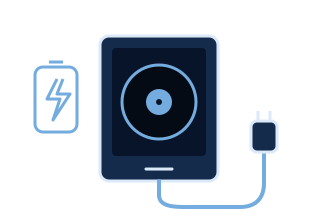
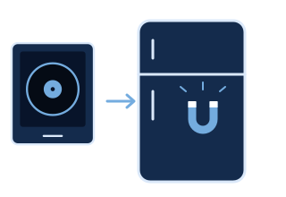

Prime pagine: El Gráfico n° 3065, 1978 – pubblico dominio · El Gráfico n° 3482, 1986 – pubblico dominio · La Nación, 19/12/2022 – © La Nación / Getty Images
Argentina · 9 dischiPronta consegna
I 9 dischi dell'Argentina
Nove gol, nove storie. Tocca un disco per leggere com'è andata, con le parole dei giornali e dei telecronisti di quel giorno.
🎧 Tocca un disco e ascolta il golPronta consegna: lo spediamo subito. Spedizione inclusa in tutto il mondo.

Sfoglia i 9 dischi
🎧 Tocca un disco. Riascolta quel gol. Rivivi l’emozione.


Disco 1 di 9
Maradona 51'
La mano de Dios
Il ricordoUn pugno più alto del cielo di mezzogiorno. Il pallone entrò, e con lui un paese intero.
Città del Messico, quarti di finale contro l'Inghilterra, quattro anni dopo la guerra delle Malvinas. Per gli argentini non è una partita come le altre.
Al 51' un rinvio sbagliato di Steve Hodge fa salire il pallone verso il portiere Peter Shilton. Maradona, venti centimetri più basso, salta con lui e tocca il pallone con il pugno sinistro. L'arbitro tunisino Ali Bin Nasser convalida: 1-0.
Gli inglesi protestano, ma il gol resta. Quattro minuti dopo Maradona segnerà anche il gol del secolo.
Curiosità A fine partita disse che il gol era arrivato «un po' con la testa di Maradona e un po' con la mano di Dio». Da allora quel gol si chiama così. — Diego Armando Maradona, conferencia de prensa, 22/06/1986


Disco 2 di 9
Burruchaga 84'
Mundial 1986
Il ricordoQuaranta metri da solo, con trenta milioni di cuori che correvano dietro di lui.
Nella finale l'Argentina va sul 2-0 con José Luis Brown e Jorge Valdano. La Germania Ovest non molla: Rummenigge e Völler pareggiano in sei minuti.
All'84' Maradona, marcato stretto per tutta la partita, trova lo spazio per un solo passaggio. Basta: Jorge Burruchaga scappa verso la porta inseguito da un difensore tedesco e batte Harald Schumacher in uscita. 3-2.
Sei minuti dopo l'Argentina è campione del mondo per la seconda volta.
Curiosità Anni dopo ha raccontato i suoi 40 metri di corsa verso Schumacher: «Nunca pensé otra cosa que en que fuera gol». Non pensavo ad altro che al gol. — Jorge Burruchaga, Análisis Digital, 29/06/2021
«El grito de un país. ¡Campeones del mundo!»


Disco 3 di 9
Messi 28'
Getafe 2007
Il ricordoVentun anni dopo, la stessa corsa: come se il calcio avesse riavvolto il nastro per chi era nato troppo tardi.
Messi ha 19 anni. Riceve palla sulla destra, ancora nella sua metà campo, e parte.
Salta uno dopo l'altro gli avversari che gli vanno incontro, entra in area, dribbla anche il portiere e segna da posizione defilata, con il difensore che arriva in scivolata troppo tardi.
Allo stadio e davanti alla TV tutti pensarono la stessa cosa: era il gol di Maradona all'Inghilterra, rifatto quasi uguale 21 anni dopo.
Curiosità A fine partita lo spiegò in sei parole: «Vi hueco y tiré para adelante», ho visto uno spazio e sono andato. 55 metri, 12 secondi, 6 avversari saltati. — Lionel Messi, Mundo Deportivo, 19/04/2007
«El pie de Dios»
«Y ahora lo llaman «Messidona»»
«Encara Messi!»


Disco 4 di 9
Montiel 4-2
Campioni 2022
Il ricordoTrentasei anni di attesa in undici metri. Un tiro, e un paese intero ha ripreso a respirare.
Una delle finali più belle di sempre. L'Argentina va sul 2-0, Mbappé pareggia con due gol in due minuti. Nei supplementari Messi segna il 3-2, Mbappé completa la tripletta: 3-3.
Ai rigori Emiliano Martínez para il tiro di Coman e Tchouaméni manda fuori. Sul quarto rigore argentino va Gonzalo Montiel: se segna, è finita.
Aveva deciso di calciare forte e centrale. Vede Lloris muoversi in anticipo e all'ultimo cambia lato. Gol: l'Argentina è campione del mondo.
Curiosità Nei supplementari un suo fallo di mano aveva dato a Mbappé il rigore del 3-3. Prima dei rigori Scaloni gli chiese due volte se se la sentiva: «le respondí que estaba seguro», gli risposi che ero sicuro. Poi segnò quello decisivo. — Gonzalo Montiel, AFA Estudio, 2023
«Gloria eterna»
«¡Somos campeones del mundo!»
«Le cambié de palo.»

Disco 5 di 9
Messi 61'
Copa América 2007
Il ricordoTutti aspettavano il tiro. Lui disegnò un arcobaleno, e il pallone scese piano, come una piuma che sa dove andare.
Messi ha appena compiuto 20 anni. L'Argentina è avanti 1-0 sul Messico, ma la partita è ancora aperta.
Al 61' Messi riceve in area sulla destra, da posizione defilata. Tutti si aspettano il tiro o il cross: lui invece alza un pallonetto morbido sopra il portiere, che si infila sotto la traversa. 2-0.
Poi Riquelme chiude su rigore: 3-0, Argentina in finale.
Curiosità Anni dopo l'arbitro cileno Carlos Chandía ha raccontato che nel finale Messi, già ammonito, toccò il pallone con la mano. Invece del secondo giallo gli disse: «Esta jugada es amarilla, pero te va a costar la remera». Negli spogliatoi Messi gli diede la maglia. — Carlos Chandía, El VBAR de Caracol, 2024
«Messico'86»
«Belleza americana»


Disco 6 di 9
Maradona 55'
El gol del siglo
Il ricordoSessanta metri, l'Inghilterra alle spalle, e un telecronista che piangeva perché le parole non bastavano più.
Quattro minuti dopo la mano de Dios. Héctor Enrique passa il pallone a Maradona nella sua metà campo.
Maradona si gira e parte. Supera Beardsley e Reid, poi Butcher e Fenwick, salta anche il portiere Shilton e appoggia in rete. Circa sessanta metri in poco più di dieci secondi.
Alla radio Víctor Hugo Morales gridò: «¡Barrilete cósmico! ¿De qué planeta viniste?».
Curiosità Tutto era cominciato a Wembley nel 1980: Maradona saltò mezza difesa inglese, ma il tiro non entrò. Al telefono il fratello Hugo gli disse: «Pelu, tendrías que haber enganchado», dovevi saltare anche il portiere. Sei anni dopo lo fece. — Hugo Maradona, después de Wembley 1980 (El Gráfico)
«No llores por mí Inglaterra»
«¡Barrilete cósmico! ¿De qué planeta viniste?»
«El Negro Enrique me la da lejos del arco.»


Disco 7 di 9
Kempes 38'
Mondiali 1978
Il ricordoIl Monumental sotto una pioggia di coriandoli: sembrava nevicasse carta, a giugno, solo per lui.
La prima finale mondiale giocata in casa. Il Monumental è pieno e il campo è coperto di coriandoli.
Al 38' Mario Kempes entra in area tra due difensori olandesi e batte il portiere Jan Jongbloed: 1-0. L'Olanda pareggia con Nanninga a otto minuti dalla fine.
Nei supplementari segna ancora Kempes, poi Bertoni: 3-1. È il primo Mondiale della storia dell'Argentina.
Curiosità Nel primo turno non segnava e portava i baffi. Menotti gli disse: «…¿por qué no se afeita de una vez en Rosario y se acuerda de hacer goles?», perché non si rade e si ricorda di fare gol? Kempes si rasò e da lì segnò 6 gol, due in finale. — César Luis Menotti, según Mario Kempes (EFE, 2018)
«Kempes, el jugador del Mundial»


Disco 8 di 9
Di María 36'
Mondiali 2022
Il ricordoCorse e pianse nello stesso momento. Certe gioie sono troppo grandi per una persona sola.
L'Argentina è già avanti 1-0 con il rigore di Messi. Al 36' parte un contropiede velocissimo: Messi, Julián Álvarez, Mac Allister.
Mac Allister serve Ángel Di María che arriva da sinistra in corsa e calcia di prima sul secondo palo. 2-0.
Di María si mette a piangere in mezzo al campo. Aveva già segnato nella finale olimpica del 2008, nella finale di Copa América 2021 al Maracanã e nella Finalissima 2022 a Wembley.
Curiosità Prima della finale aveva scritto alla moglie: «Voy a hacer un gol porque está escrito, como en el Maracaná y Wembley». Farò gol perché è scritto, come al Maracanã e a Wembley. — Ángel Di María, El Economista, 20/12/2022
«In the Hand of God»
Disco 9 di 9
Messi 84'
Brasile 2012
Il ricordoContro il Brasile, il rivale di sempre: un tiro a giro sotto l'incrocio, come una firma in fondo a una lettera d'amore.
Un'amichevole che sembrava una finale: sette gol e continui cambi di risultato tra Argentina e Brasile.
Sul 3-3, a pochi minuti dalla fine, Messi riceve vicino a centrocampo sulla destra. Punta la porta in diagonale e dal limite dell'area calcia a giro sotto l'incrocio. 4-3.
È la sua tripletta contro il Brasile: tre gol nella stessa partita contro i rivali di sempre.
Curiosità In conferenza stampa il ct Alejandro Sabella la chiuse così, parlando di Messi: «Gracias a Dios es argentino». Per fortuna è argentino. — Alejandro Sabella, conferencia de prensa (Diario de Cuyo, 10/06/2012)
«Con Messi todo se puede»
Tutti e 9 i dischi, nel quadro luminoso
Pronta consegna: lo spediamo subito. Spedizione inclusa in tutto il mondo.
Ordina l'edizione Albiceleste69 €Pronto per emozionarti
Come si usa
Si ricarica facilmente. Si attacca con i magneti incorporati. E il tuo gol torna a farsi sentire.

01Collega e ricarica
Si ricarica facilmente tramite cavo, così è pronto per il prossimo gol.

02Avvicina. Si attacca.
I magneti sono già incorporati. Posizionalo sul frigorifero o su una superficie metallica compatibile.
03Rivivi quel gol
Appoggia il disco sul quadro: si accende, il disco gira e la telecronaca riporta l’emozione a casa.